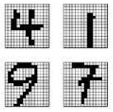

Pattern Recognition#

PR is a field of study focused on identifying patterns and trends within data to make informed decisions. In this course, students will learn how PR techniques are used in various applications such as image and text recognition. By mastering PR algorithms, students will gain valuable skills in data analysis and decision-making processes.
Sections of Pattern Recognition#
We follow remaining contents in Machine Learning include: Feature Reduction, kernel regression, gaussian process, ensemble learning, federated learning, diffusion network, active learning, contrastive learning, on-line learning, deep learning.
The outline of Pattern Recognition book:#
Introduction
Introduction to Pattern Recognition
Datasets
Models
Cost Functions
Learning Rules
Visualization
Introduction to Visualization in Pattern Recognition
Clustering
Introduction to Clustering
Clustering Techniques
Fuzzy C-Means (FCM)
FCM: Saghi’s Project (2 points)
Linkage Clustering (2 points)
E-Insensitive Linkage Clustering (2 points)
Self-Organizing Feature Map (SOFM) Project (2 points)
Regression
Introduction to Regression
Linear Regression
Non-Linear Regression
Linearization Techniques
Kernel Regression
Evaluation and Model Selection
Solution Approaches for Regression
Theoretical Aspects of Regression
Applications in Pattern Recognition
Classification
Introduction to Classification
Support Vector Data Description (SVDD)
Support Vector Machines (SVM)
Fisher’s Linear Discriminant
Kernel Fisher Discriminant Analysis
Decision Trees (2 points)
Bayes Estimation
Introduction to Bayes Estimation
Kernel Density Estimation (KDE)
Parametric Density Estimation
Gaussian Mixture Models (GMM)
Supplementaries